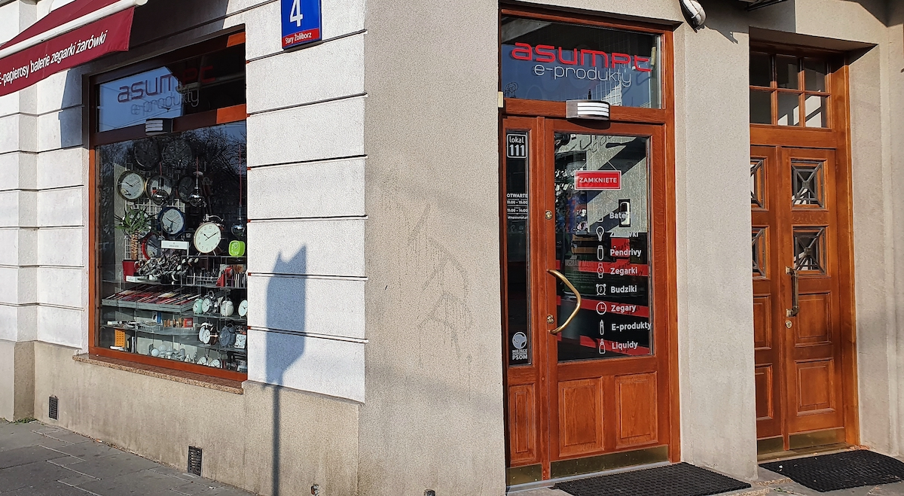
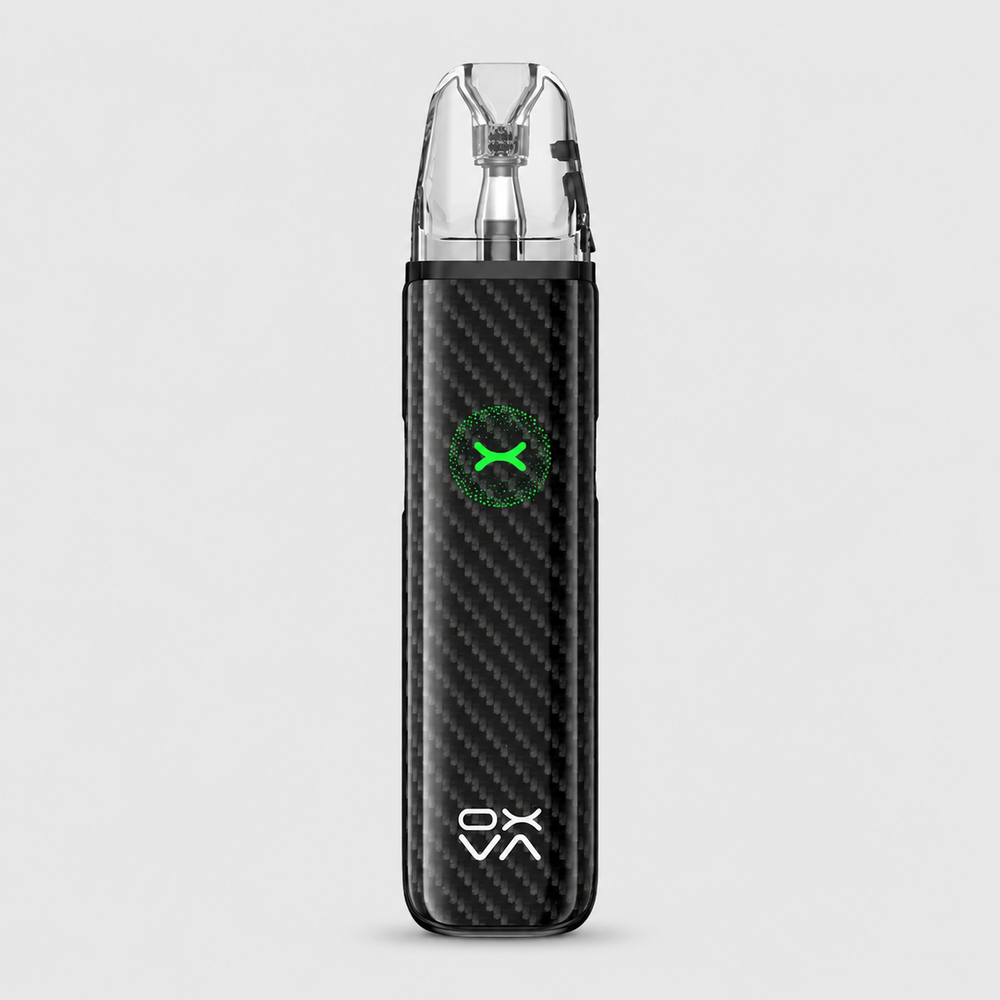
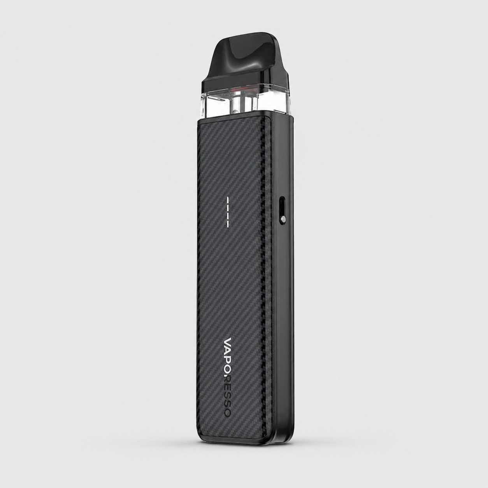
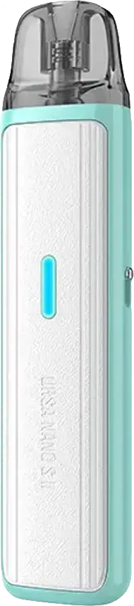

Sklep stacjonarny
Działamy od 1990 roku w tym samym miejscu na Żoliborzu. Bez wysyłki — przychodź osobiście po poradę i zakup.
Produkty na stronie przeznaczone są wyłącznie dla osób pełnoletnich. Wchodząc na stronę oświadczasz, że masz ukończone 18 lat.
Asumpt s.c. · Pl. Wilsona 4 · Warszawa · od 1990

Rodzinny sklep stacjonarny na Pl. Wilsona 4. Doradzamy przy wyborze zestawów startowych, liquidów i soli nikotynowych. Pierwsze 30 minut konsultacji — zawsze bezpłatnie.
Asumpt to lokalny sklep e-papierosów w Warszawie, na Żoliborzu, 2 minuty od metra Plac Wilsona. Szukasz „vape shop Warszawa” lub „e-papierosy Żoliborz”? Jesteś we właściwym miejscu.
W naszym sklepie znajdziesz zestawy startowe, liquidy, sole nikotynowe, grzałki i części, a także doradztwo przy doborze sprzętu. Otwarte Pn-Pt 11:00-19:00, Sob 11:00-14:00.
Działamy od 1990 roku w tym samym miejscu na Żoliborzu. Bez wysyłki — przychodź osobiście po poradę i zakup.
Pierwszy zakup nie może być przypadkiem. Bateria, atomizer, liquid — dobierzemy precyzyjnie pod Ciebie.
Po 30 latach palenia tradycyjnych papierosów przesiedliśmy się na e-papierosy w 2009. Wiemy, jak to wygląda od środka.
Przez te lata kilka tysięcy osób definitywnie rozstało się dzięki nam z tradycyjnymi papierosami.
W sklepie Asumpt na Pl. Wilsona w Warszawie stawiamy wyłącznie na sprawdzone marki e-papierosów. Każdy zestaw, który u nas kupisz, ma wsparcie w postaci grzałek, kartridży i części zamiennych — bo wiemy, że e-papieros to nie jednorazowy zakup, tylko narzędzie, którego używasz każdego dnia.
Lider rynku podów. Najpopularniejszy model XROS 5 z technologią COREX 2.0 — niezawodność, świetny smak i długi czas pracy baterii. Dostępne na Żoliborzu w pełnej rozpiętości mocy i akcesoriów.
Idealne dla osób przechodzących z tradycyjnych papierosów. Kompaktowe pody z regulacją przepływu powietrza, do 30W mocy, ładowanie USB-C. W naszym sklepie zawsze mamy grzałki OXVA XLIM.
Premium pody dla wymagających. Solidne wykonanie, świetna jakość zaciągu, idealne do soli nikotynowych. Wybierane przez doświadczonych użytkowników z całej Warszawy.
Voopoo to chipset GENE — najnowsze technologie sterowania mocą. Modele Drag i Argus to klasyka dla osób, które chcą czegoś więcej niż prostego poda.
Marka, która ukształtowała rynek e-papierosów. SMOK Nord to wciąż jeden z najczęściej wybieranych pod systemów. Pewność działania i szeroka dostępność grzałek.
Producent z najdłuższą historią na rynku. Aspire to e-papierosy, które po prostu działają — bez fajerwerków, ale z wieloletnią gwarancją dostępności grzałek BVC i AVP.
Wybierając e-papierosa w naszym sklepie w Warszawie, masz gwarancję, że za miesiąc, pół roku i dłużej znajdziesz u nas grzałkę pasującą do Twojego urządzenia. To dla nas absolutny priorytet — i właśnie dlatego klienci wracają do Asumpt od ponad trzech dekad.
Zawsze w magazynie. Grzałki XLIM, XROS, Nord, Argus, Ursa, Aspire BVC — wymienisz na poczekaniu. Nie odsyłamy klientów na "za tydzień".
Kartridże do każdego z polecanych przez nas zestawów — z grzałką i bez. Pełna kompatybilność z aktualnymi modelami.
Szkła zamienne, drip tipy, baterie 18650, ładowarki, kable USB-C. Wszystko czego potrzebuje regularny użytkownik e-papierosa.
Klienci często mówią nam, że mamy najlepsze ceny grzałek na Żoliborzu. Nie obiecujemy — sami sprawdź porównując.
Wybór pierwszego e-papierosa potrafi przerosnąć — na rynku są setki modeli. Poniżej krótki przewodnik, który pomoże Ci się zorientować, zanim wpadniesz do naszego sklepu na Pl. Wilsona. Na miejscu doprecyzujemy wybór bezpłatnie podczas 30-minutowej konsultacji.
Najprostsze i najlepsze rozwiązanie dla osób, które do tej pory paliły tradycyjne papierosy. Pody są małe, kieszonkowe, działają natychmiast po wyjęciu z pudełka. Polecamy: Vaporesso XROS 5, OXVA XLIM, Lost Vape Ursa Nano. W połączeniu z solą nikotynową 20 mg dają zaciąg najbardziej przypominający zwykłego papierosa.
Większe, mocniejsze urządzenia z regulacją mocy, dłuższą baterią i większym kartridżem. To pierwszy krok od poda w kierunku poważniejszego sprzętu. Tu sprawdzą się Voopoo Drag, Voopoo Argus oraz OXVA Origin.
Sól nikotynowa (20 mg) jest gładsza, mocniej zaspokaja głód nikotynowy i lepiej współpracuje z podami. Klasyczny liquid (6, 12, 18 mg) to wybór dla osób, które chcą eksperymentować ze smakami i mocniej "kopiącym" zaciągiem. Na miejscu w sklepie dobieramy moc do liczby palonych wcześniej papierosów.
Tanich e-papierosów jednorazowych z marketów oraz "zestawów na ali" bez wsparcia serwisowego. Nie dlatego, że są złe — tylko dlatego, że za miesiąc, gdy grzałka się zużyje, nikt Ci nie pomoże. W naszym sklepie na Pl. Wilsona dostajesz sprzęt z pewnością serwisu na lata.
Asumpt to jeden z najdłużej działających sklepów e-papierosów w Warszawie. Mieścimy się w samym sercu Starego Żoliborza — przy Pl. Wilsona 4, dwie minuty od stacji metra Plac Wilsona (linia M1). Dojazd autobusem, tramwajem i metrem jest bardzo wygodny z całej Warszawy.
2 minuty pieszo od wyjścia ze stacji M1 Plac Wilsona. Najszybszy dojazd z centrum Warszawy, Mokotowa i Bielan.
Przystanek Plac Wilsona obsługuje wiele linii tramwajowych i autobusowych — łatwy dojazd z każdej dzielnicy.
Bezpośrednio przy Pl. Wilsona oraz na okolicznych ulicach Stary Żoliborz. Strefa Płatnego Parkowania w godzinach pracy sklepu.
Od 1990 roku w tym samym miejscu na Żoliborzu. Sklep przechodził różne fazy rynku — od papierosów tradycyjnych, przez pierwsze e-papierosy, po nowoczesne pody.

Nowoczesność, wydajność i styl — do 30W, bateria 1000 mAh, USB-C.

Nowy standard wydajności — COREX 2.0, regulacja przepływu powietrza i zakres MTL / RDL.

Kieszonkowy pod z mocą do 18 W, baterią 800 mAh, USB-C, Air Draw i regulacją przepływu.
Macie prawo się nie znać. To my mamy obowiązek poświęcić Wam czas, dobrać sprzęt i nauczyć techniki e-palenia — tak, abyście już nigdy nie pomyśleli o powrocie do zwykłych papierosów.
Sklep mieści się przy Placu Wilsona 4 w Warszawie, w dzielnicy Żoliborz (Stary Żoliborz). To 2 minuty pieszo od stacji metra Plac Wilsona (linia M1). Pełne dane kontaktowe, mapa Google i godziny otwarcia znajdują się w zakładce Kontakt.
W Asumpt na Żoliborzu mamy zestawy i pody marek: Vaporesso (XROS, ARMOUR), OXVA (XLIM, XLIM GO, Origin), Lost Vape (Ursa Nano, Ursa Mini), Voopoo (Drag, Argus, Vinci), SMOK (Nord, Novo) oraz Aspire. Do każdej marki zapewniamy ciągłą dostępność grzałek i kartridży.
Niemal zawsze tak. Mamy grzałki OXVA XLIM, Vaporesso XROS, SMOK Nord, Aspire BVC, Lost Vape Ursa, Voopoo PnP — wszystkie aktualne typy. Jeśli czegoś brakuje na półce, najczęściej możemy zamówić w ciągu kilku dni. Zadzwoń: 22 839 86 33.
Tak. Pierwszej konsultacji w naszym sklepie poświęcamy zwykle 20-30 minut. Dobieramy zestaw, liquid lub sól nikotynową i uczymy techniki e-palenia. Konsultacja jest bezpłatna i bez zobowiązań — nie zakładamy z góry, że coś u nas kupisz.
Tak. W ofercie mamy liquidy 10 ml w mocy 6, 12 i 18 mg w smakach tytoniowych, owocowych, miętowych i smakowych. Sole nikotynowe 20 mg dostępne są w liniach Pinky Salt, VBAR oraz SIC z bardzo szerokim wyborem smaków. Pełna lista smaków jest w zakładkach Liquidy i Sole.
Nie. Asumpt to wyłącznie sklep stacjonarny — taką decyzję podjęliśmy świadomie. Strona internetowa służy do prezentacji oferty, doradztwa i kontaktu. Zakupy oraz konsultacje odbywają się osobiście na Pl. Wilsona 4.
Od 1990 roku. To czyni Asumpt jednym z najdłużej działających sklepów tytoniowo-vape w Warszawie. Przeszliśmy od tradycyjnych papierosów, przez pierwsze e-papierosy w 2009 roku, aż do nowoczesnych podów. Wiemy o tym rynku praktycznie wszystko.
Tak. Klienci często zwracają nam uwagę, że ceny grzałek, liquidów i zestawów są u nas niższe niż w innych sklepach na Żoliborzu i w centrum Warszawy. Nie reklamujemy się hasłem "najtaniej" — wolimy, żebyś sam porównał.